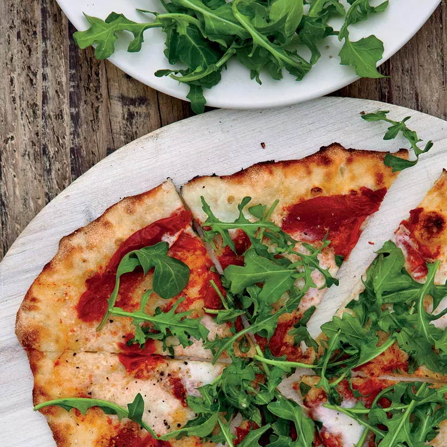

Sun-Dried Tomato and Arugula Pizza
Ingredients
Dough
- 4 cups all-purpose flour, plus more for dusting.
- 1 tablespoon sugar.
- 1 teaspoon active dry yeast.
- 1 1/4 cups warm water.
- 3 tablespoons extra-virgin olive oil
- 1 teaspoon salt
Toppings
- 32 sun-dried tomato halves.(not oil-packed)
- 4 garlic cloves, chopped.
- 1/3 cup extra-virgin olive oil.
- 1 pound fresh mozzarella, thinly sliced.
- Salt and freshly ground pepper.
- 2 cups packed baby arugula.
Directions
Step 01
In the bowl of a standing mixer fitted with the dough hook, mix the flour, sugar and yeast at medium speed. At low speed, stir in half of the warm water, the olive oil and the salt, then add the remaining water and mix until a ball forms. Mix the dough for 2 minutes at low speed, 2 minutes at medium speed and 2 final minutes at low speed. Transfer the dough to a lightly oiled bowl, cover with plastic wrap and let stand in a warm place until the dough has doubled in bulk, about 1 1/2 hours.
Step 02
Put a pizza stone in the bottom of the oven and preheat the stone in the oven to 500° for about 45 minutes.
Step 03
Punch down the dough and scrape it onto a floured work surface. Form the dough into a ball. Cut the ball into 8 equal-size pieces. Knead each piece into a ball and then flatten into disks. Cover with plastic wrap and let the dough rest for about 20 minutes.
Step 04
Put the sun-dried tomatoes in a small saucepan and cover with water. Cover and simmer over low heat until very soft, about 5 minutes. Drain and coarsely chop the tomatoes. In a mini food processor, puree the chopped garlic with the olive oil.
Step 05
Generously flour a pizza peel. Using a rolling pin, roll out a disk of dough to an 8-inch round, about 1/8 inch thick. (Alternatively, pull and stretch the disk into an 8-inch round.) Transfer the round to the peel and brush with the garlic puree. Scatter with one-eighth of the sun-dried tomatoes and arrange one-eighth of the sliced cheese on top. Drizzle with a little of the garlic puree and season with salt and pepper. Bake on the hot stone for about 4 minutes, until the crust is crisp and the cheese is bubbling. Top with some baby arugula and serve. Repeat with the remaining dough and toppings.
Make Ahead
The dough can be prepared through Step 1: Punch it down, cover with plastic wrap and refrigerate overnight. The chopped tomatoes and garlic oil can be refrigerated overnight. Bring everything to room temperature before proceeding.